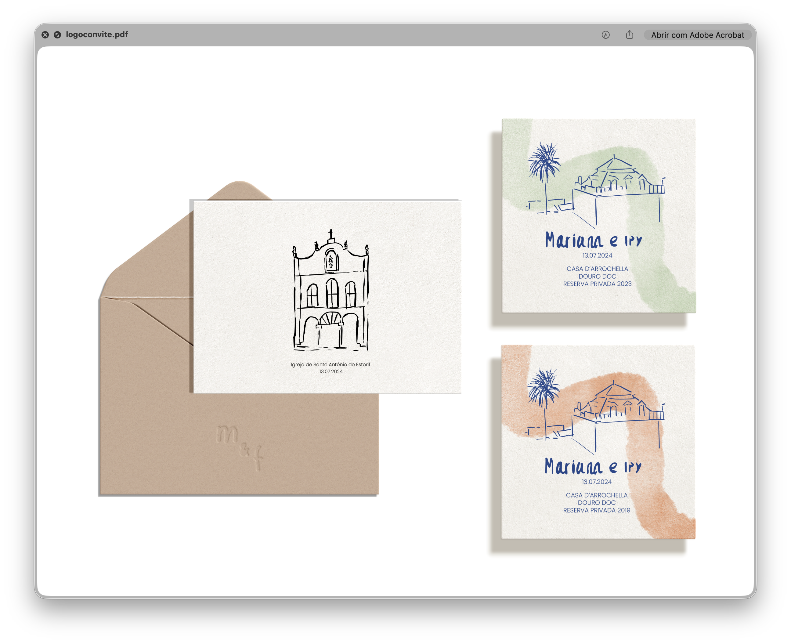
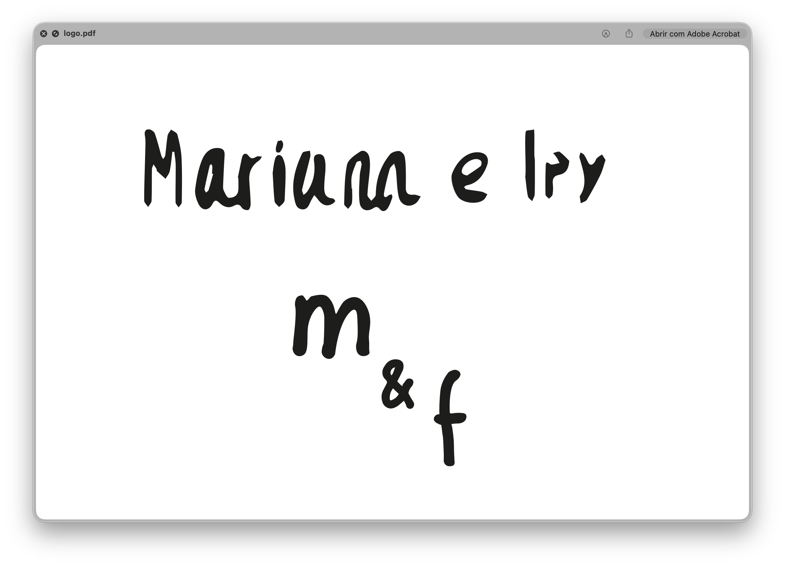
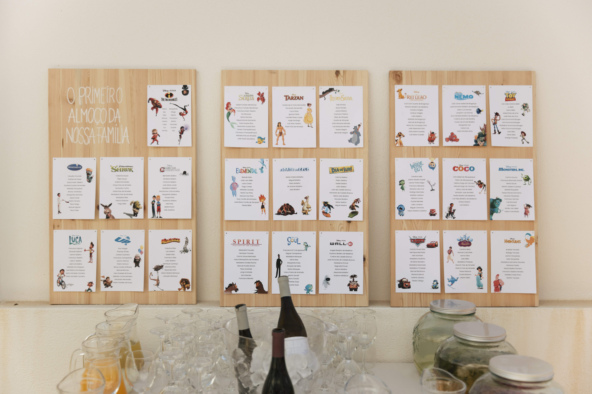
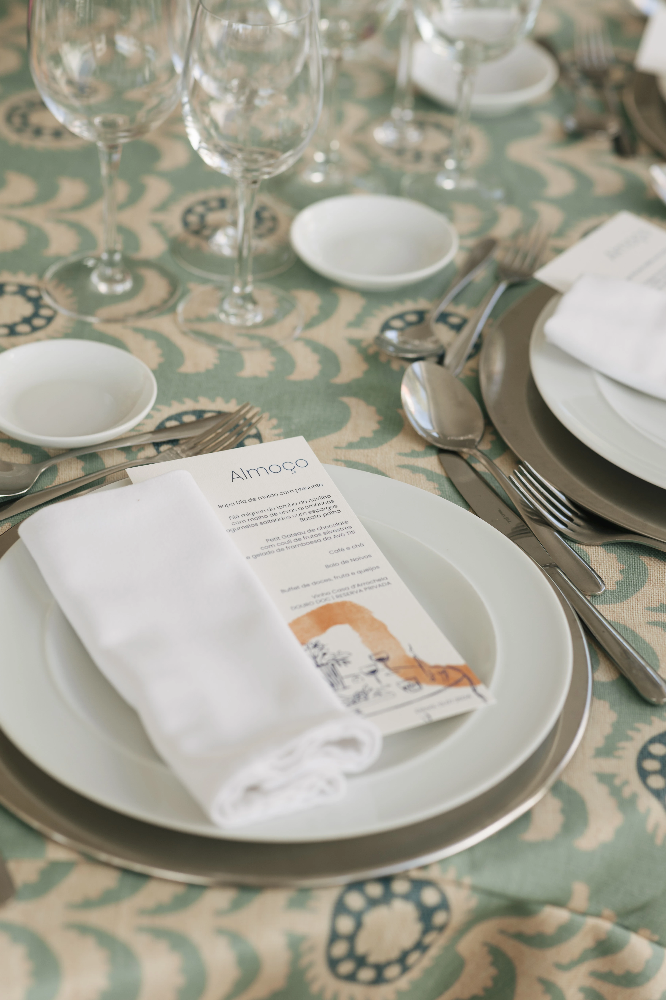
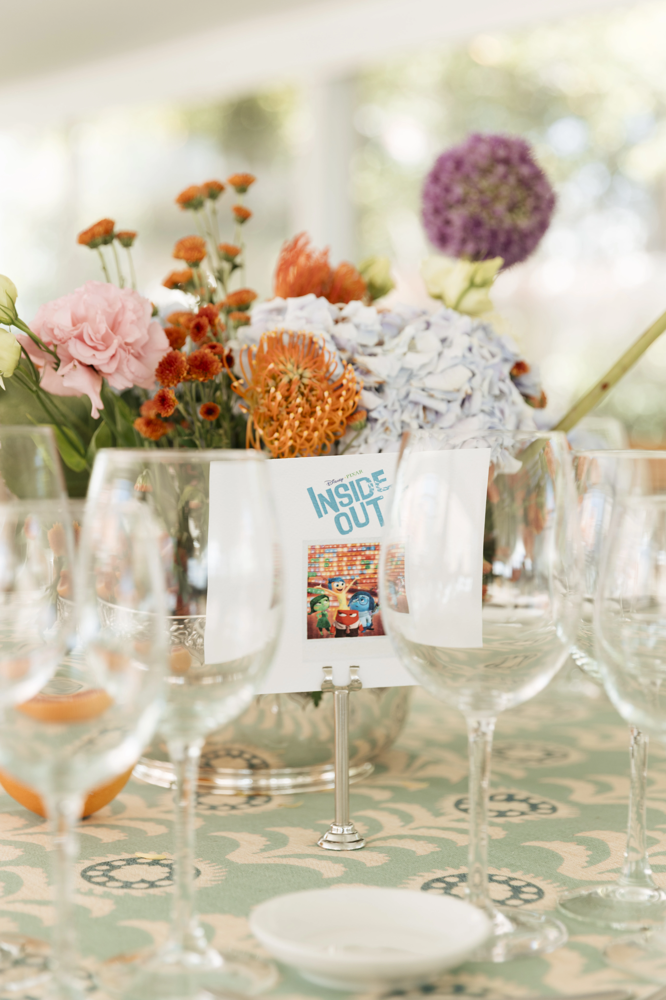
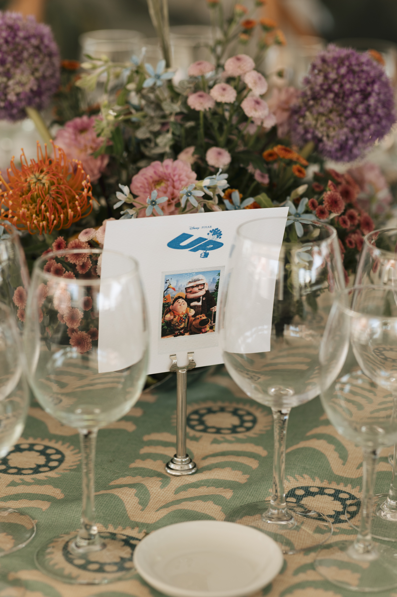
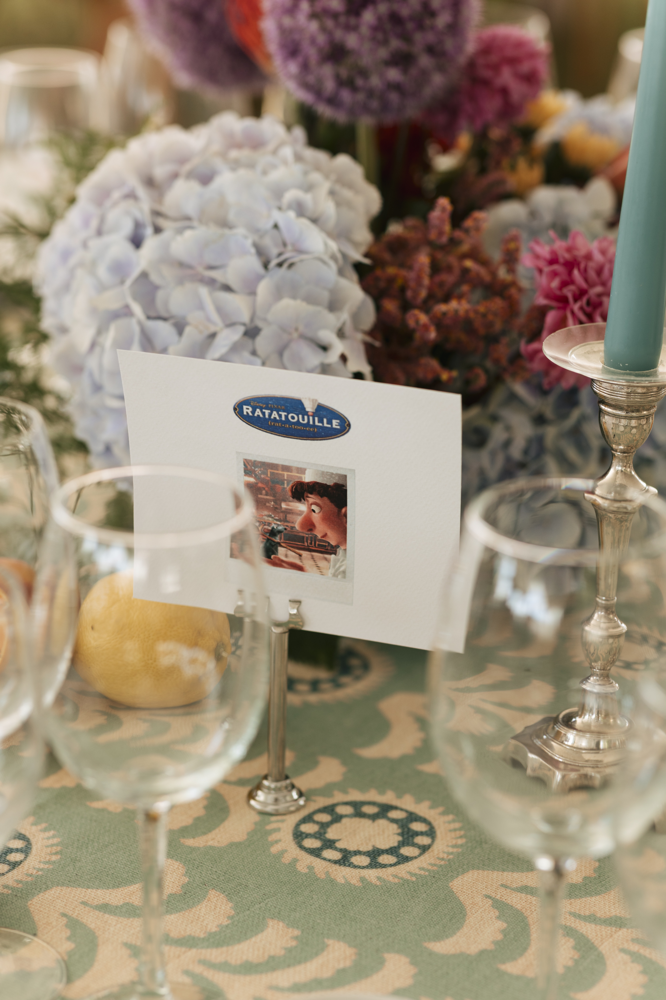

Mariana & Felipe is a visual identity project for a summer wedding, conceived as a total design system — from save-the-dates and invitations to on-the-day signage and table collateral. The brief called for something warm, personal and handmade-feeling, far from the generic elegance of off-the-shelf wedding stationery.
The identity is built around a series of hand-drawn illustrations rendered in loose watercolor washes, depicting the couple's shared references: the landscape of southern Portugal, the flowers in the garden where they met, and the architecture of the quinta where they married. Each piece within the system draws from this visual vocabulary while adapting to its format and purpose.
The result is a cohesive set of printed materials that feels genuinely crafted — intimate and celebratory in equal measure.






